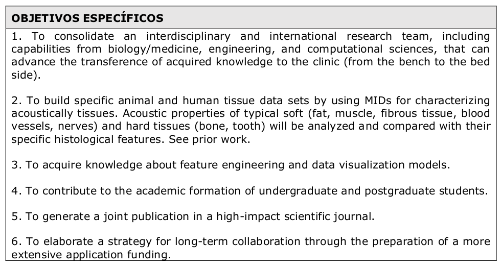

Nuevos integrantes que se unen al proyecto
Contents
7. Nuevos integrantes que se unen al proyecto#
7.1. Agosto de 2021:#
Estudiantes de Ingeniería Civil Acústica:
Esteban Gallardo B.
Hakim Martínez M.
Etiquetado de audios usando Label-Studio
7.2. Enero 2022:#
Estudiantes de Ingeniería Civil Acústica:
Rafael Peñailillo H.
Etiquetado de audios usando Label-Studio
7.3. 2020-2022 Proyecto de investigación FONDEF:#
Investigador Principal: Dr. Néstor Becerra Y.; Universidad de Chile. Co-Investigador: Dr. Fernando Huenupán Q. Universidad de La Frontera. Automatic detection and classification of seismological events using advances machine learning methods.
Asistente de investigación Septiembre 2020 - Abril 2021: Diego Espejo A.
Asistente de investigación Mayo 2021 - Actualmente: Rafael Peñailillo H.
Agosto 2022: Estudiante de Geología:
Joaquín Morales M.
Señales de eventos sísmicos
Etiquetado, análisis y visualización de datos.
8. Participamos en Congreso Internacional de Acústica#
{kind=link}
{kind=link}
8.1. 2020-2022 Proyecto de investigación FONDEF:#
Investigador Principal: Dr. Enrique Suárez. Sistema integrado de análisis de Fuentes Sonoras Ambientales: Sistema FuSA.
Financiamiento Tesis de Magister en Informática, Diego Espejo A.
Integra equipo de redes neuronales artificiales de FuSA.
Julio 2022: AuMiLab - Primer trabajo profesional de etiquetado de audios, 2700 minutos en total.
Se integran a AuMiLab para etiquetado de audios:
Cristian Cofré S., Licenciado en Física, Estudiante Magister en Informática.
Estudiantes de Ingeniería Civil Acústica: Esteban Vargas C., Felipe Véliz, Leonardo Santos, Mauricio Barrientos.
9. Tesis sobre acoustic features en histología#
Julio 2022:
Se integra Robin Urrutia E. - Estudiantes de Ingeniería Civil Acústica, Vinculación con Magister en Acústica y Vibraciones.
Postulamos a Concurso ANID de Fomento a la Vinculación Internacional para Instituciones de Investigación Convocatoria 2022:

Título: Medical Interventional Device and Acoustic Tissue Characterization with Multiple Clinical Potentialities.
Dra. Montserrat Guerra - Instituto de Anatomía, Histología y Patología, UACh
Dr. Patricio Fuentealba Ortiz - Instituto de Electricidad y Electrónica, UACh
Dr. Fernando Huenupań Quinán - Departamento de Ingeniería Eléctrica. Universidad de La Frontera
Dr.-Ing. Alfredo Illanes, Dr.-Ing. Axel Boese, Mr. Thomas Sühn, PhD Student; INKA Application Driven Research, Medizinische Fakultät, Universitätsklinikum Magdeburg, Germany
Ing. Diego Espejo A. - Investigador Joven
Robin Urrutia E. Estudiante Tesista.
{kind=link}
9.1. Participamos en exposicion Centro 14K#
Proyectos de I+D - Exploración de datos de percepción háptica mediante procesamiento de señales y algoritmos no supervisados
{kind=link}
{kind=link}
{kind=link}
{kind=link}
10. Qué viene a futuro:#
10.1. Septiembre de 2022#
Tesis de Estudiante de Ingeniería Civil Acústica, Richard Povea I.
Localización de eventos sonoros polifónicos en una escena sintetizada de ambiente de humedal urbano.
Dr. Rhoddy Viveros, Post Doctorado Proyecto Fondef FuSA
Ing. Diego Espejo A.
Dr. Felipe Otondo
Diego Espejo: Escribir el artículo sobre su tesis en formato científico:
Bioacoustics - The International Journal of Animal Sound and its RecordingTítulo: Short-time acoustic indices for monitoring urban wetlands using artificial neural networks
Preparar y enviar para ser sometido a revisión en la revista
Rafael Peñailillo H. - Tema de Tesis
Análisis de relaciones entre características acústicas de la voz con el riesgo suicida entre adolescentesDra. Carla Figueroa S., Universidad Autónoma de Chile
Dr. Fernando Huenupán Q., Universidad de La Frontera
Crear un programa de asignatura optativa:
ACUSXXX - Introducción al aprendizaje automático en acústica
Segunda versión
Simposio en Acústica Computacional
{kind=link}